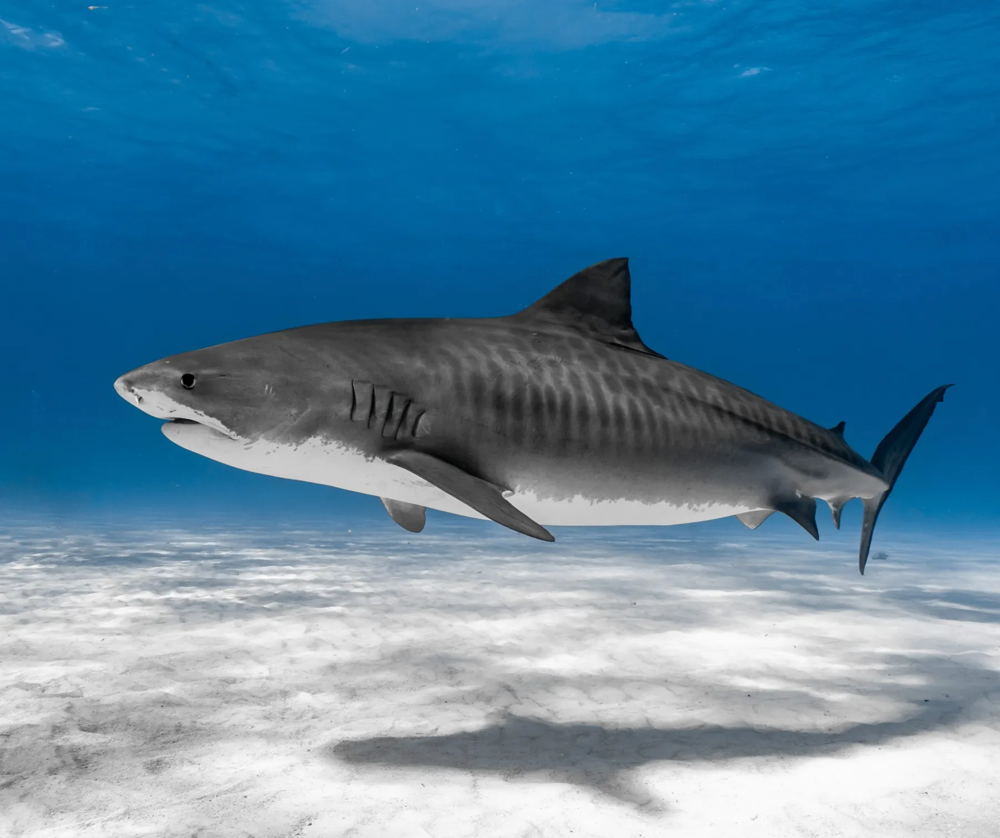

Fossil records state that sharks have been alive before the time of lifeforms such as dinosaurs and trees, making them one of the oldest specimens currently living. These species date back to over 400 million years ago, but sharks may be coming close to the end of their time very soon. The IUCN has found that 37% of shark species are threatened by extinction, with threats like overfishing, illegal fishing, bycatch, and shark finning. There are also approximately 100 million sharks that die per year, meaning 11 thousand sharks dying an hour, and 274 thousand a day.
Sharks reproduce very slowly, meaning that overfishing is killing them before they have a chance to reproduce. Due to this, researchers have found that shark populations have crashed by 70% over the past 50 years.
The action of shark finning is illegal in a lot of countries, and is where people cut off the fins of a live shark and then throw the said live shark back into the ocean to die.
Tens of millions of sharks die each year as bycatch, where sea creatures like sharks are caught unintentionally in fishing gear like nets and then are thrown back into the ocean dead.
Sharks are an extremely important part of the food web, and keep biodiversity among ecosystems. Larger sharks are known as apex predators, meaning they have no natural predators of their own and maintain balance of the ocean through not letting a population get too large. Smaller sharks are known as meso predators, and despite being lower on the food chain, still fill an important role as mid-level predators.
